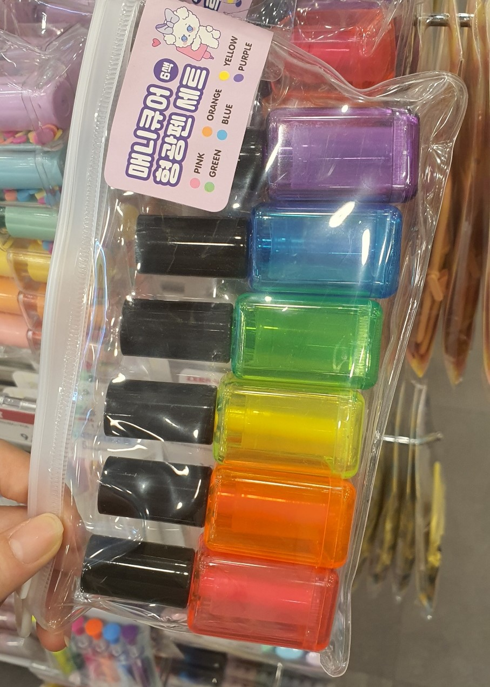

종이 완충재
새로 산 화장품의 포장 방식이 마음에 들었다. 일상생활을 하며 택배를 열 때마다 비닐과 뽁뽁이, 테이프로 겹겹이 포장된 물건들을 마주하는데, 물건을 보호하기 위해서는 어쩔 수 없다고 생각하면서도 일회용품을 과도하게 사용하고 있다는 느낌이 들었다. 반면 이 화장품의 포장은 박스를 열기 전부터 테이프 없이 박스만으로 고정되어 있었고, 내부 완충도 박스 재질의 완충재로 해결하고 있었다. 또 완충재의 크기를 택배 박스와 맞추어 종이 사용도 최소화하도록 디자인되었다. 이런 식으로 재활용을 고려한 디자인에 소비자로써 만족감을 느꼈다.
본다버그 음료수

편의점에서 발견한 음료수의 병과 라벨 디자인이 예뻐 보였다. 플라스틱 병임에도 세련된 디자인으로 얼핏 보면 유리병에 담긴 음료수처럼 보였다. 이렇게 세련된 느낌을 주는 데에는 만년필로 쓰인 듯한 로고가 한몫했다고 생각한다. 그다음으로 눈길이 가는 것은 색상인데, 음료수 자체의 색상도 먹음직스럽고, 라벨에 사용된 색상도 음료수와 잘 어울린다. 특히 레몬에이드에 사용된 파란색에서 느껴지는 청량감이 보는 이로 하여금 시원하고 상큼한 레몬에이드의 맛을 떠올리게 해 먹어보고 싶도록 만들고 있다.
버리기 편한 음식물 쓰레기통
마찬가지로 편의점에서 발견한, 라면 국물을 비롯한 음식물 쓰레기를 버릴 수 있는 쓰레기통이다. 보통은 쓰레기통이 문 안쪽에 들어가 있어 음식을 버릴 때 자세를 숙여야 해서 불편하고 흘리기도 쉽다. 그러나 이런 식으로 문 뒤쪽에 발판이 있고 그 위에 쓰레기통을 놓으면, 문을 열 때 저절로 쓰레기통이 앞쪽으로 나오게 된다. 발판 하나를 단 것만으로 이전에 비해 편의성이 훨씬 개선되었다는 점이 인상적이었다.
매니큐어 형광펜 세트
디자인적으로 눈길을 끄는 것을 찾기 위해 아트박스에 방문했다. 아이디어가 돋보이는 상품을 많이 찾을 수 있었는데, 그 중 하나가 이 형광펜 세트다. 다른 기발한 디자인의 형광펜도 많았지만, 매니큐어를 모티브로 한 것이 속이 투명해서 안의 펜촉 모양을 쉽게 확인할 수 있다는 점에서 마음에 들었다. 귀여운 아이디어와 실사용의 편의성을 둘 다 챙길 수 있는 것이다.
라면 장난감
반면에 실사용을 고려하지 않아도 되는 장난감 상품들에서는 기발한 아이디어를 더 많이 찾아볼 수 있었다. 얼핏 보면 컵라면 같은 이것은 물을 붓고 기다리면 거품이 올라오면서 푸들 모양의 피규어가 나타나는 장난감이다. 어린 시절 공룡알과 같이 물을 이용해 부풀리는 장난감은 우리에게 매우 친숙하다. 이것을 마찬가지로 물을 부어야 하는 컵라면과 접목해 새로운 재미를 느낄 수 있도록 만든 것이 정말 기발한 아이디어라고 생각했다.
앙팡 유리컵
보자마자 귀엽다는 생각이 들었던 컵이다. 특히 왼쪽의 컵은 작은 사이즈와 약간 각진 듯한 모양이 앙팡 요구르트를 떠올리게 해 더 친숙한 느낌이 들었다. ‘곰표’ 상표가 밀가루를 넘어 맥주, 과자, 패딩과 같은 다양한 상품으로 확대된 것처럼, 기존에 하나의 상품으로 강하게 인식이 박혀있던 상표를 다른 곳에도 활용하면 새로운 상품이라도 소비자에게 반갑고 익숙한 느낌을 줄 수 있다는 것을 깨달았다.
스마트폰 감옥
스마트폰 감옥! 그야말로 모든 현대인에게 필요한 제품이다. 누구나 한 번쯤 휴대폰 사용량을 줄이기 위한 시도를 해 보았을 텐데, 잠금이나 시간 제한 앱은 다운받아 봤어도 물리적으로 감옥에 가둔다는 생각은 한 번도 하지 못했다. 어찌 보면 가장 직관적이고 직접적인 방법임에도 말이다. 나는 스마트폰 사용을 줄이는 것에서조차 ‘어플을 다운받는다’는 스마트폰의 기능을 사용하고 있었던 것이다. 반성할 일이다.
슬롯머신 저금통
슬롯을 돌려서 잭팟이 터지면 열 수 있는 슬롯머신 저금통이다. 이것 또한 실용성보다는 재미있는 아이디어가 돋보이는 상품이다. 장난감과는 달리 저금통은 실용성도 필요하다는 점에서는 조금 미흡하다고 볼 수도 있지만, 잭팟이 터져야만 열 수 있으므로 아무 때나 열 수 있으면 안 된다는 저금통의 요건은 아슬아슬하게 충족한 것 같다. 요즘처럼 동전을 잘 쓰지 않는 시대에는 편리하고 동전을 많이 담는 것에 집중하기보다는 이렇게 소소한 재미를 줄 수 있는 저금통도 하나의 선택지 아닐까?
의자 포카 거치대
아기자기한 느낌을 주는 작은 의자 모양의 거치대다. 하지만 굳이 포토카드를 거치하지 않더라도 인형이나 악세사리를 올려 인테리어 소품으로 활용하기 좋아 보였다. 우리가 일상에서 보는 다양한 물건들도 처음 만들어 질 땐 디자이너의 손을 거쳤던 것들이기 때문에, 단순히 크기를 줄이고 늘리는 것만으로 장식이 되기도 한다. 확신할 수는 없지만, 미니어쳐가 꾸준히 인기를 얻는 것에도 그 이유가 조금은 반영되어 있지 않을까?
책 모양 금고
장난감 코너에 있어 바로 알아볼 수 있었지만 책 사이에 있었다면 모르고 지나갔을 법한 비밀 금고다. 책장은 예전부터 비상금, 일기장과 같이 무언가를 숨기기에 더없이 좋은 장소였다. 무언가가 달라졌을 때 위화감을 알아챌 만큼 책 하나하나에 시선이 오래 머무르지 않기 때문이다. 이렇듯 상황에 따라서는 단순히 시선을 오래 끄는 것만이 좋은 디자인은 아니라는 생각이 들었다.